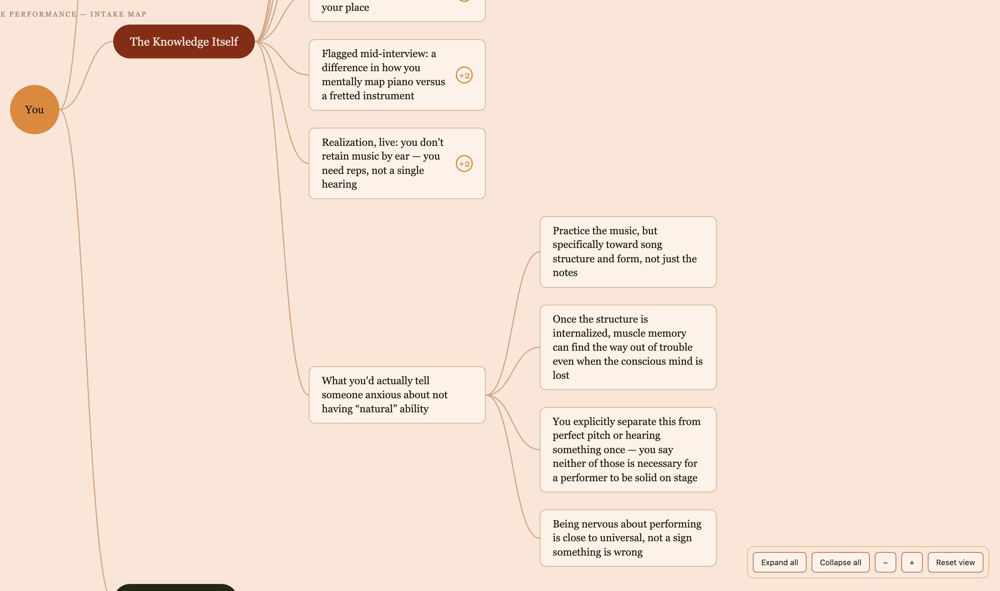
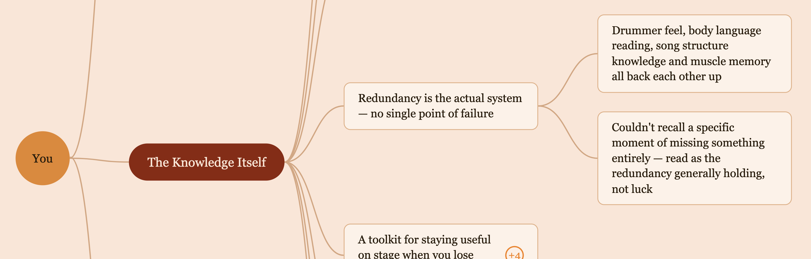

You've spent years — maybe decades — building expertise nobody ever asked you to organize. Body of Knowledge pulls it out of you, through talking instead of writing, and hands it back as something you can actually see and use.
Not a course. Not a resume. A map of what you know, built from you talking about it.

No live call. No one watching you work. Say it in your own words, whenever you've got twenty minutes.
You record yourself talking through what you know — one sitting or several, however it comes out. No live call, no one watching you work. Say it in your own words, whenever you've got twenty minutes.
Prefer writing instead? That works too — your choice.
Before anything gets built, I go through what you've shared and check it's complete. If something's missing, you'll get one quick question from me, not a full do-over.
From there I build your Body of Knowledge map: an interactive visual you can click through, laid out the way you actually think instead of forced into a straight-line outline. Nothing gets flattened to fit a template.
I build every map using Claude Code, then go through it myself and shape it before it's finished. Nothing goes out that I haven't personally reviewed.
Claude isn't having a generic conversation with you. It's working from a process I built specifically for this — refined from going through it myself first — so it actually pulls out what matters instead of small talk.
A piece you'd forgotten mattered. A thread you never had language for.
Most people don't expect what actually happens: seeing it all laid out in one place makes something click. A piece you'd forgotten mattered. A thread you never had language for. That's usually worth more than the map on its own.
That single idea, or the words you finally have for something you'd never quite named, can easily be worth more than what you paid for the whole map.
I built my own map before I built this for anyone else. Mine is called Live Performance — decades of touring and playing bass, from a run with Klymaxx to a last-minute tour with a cumbia band where I learned the songs from charts in one rehearsal and played the whole first show in a language I didn't understand.
Seeing it laid out made something click I'd never put into words before: what keeps me from losing my place on stage isn't one skill, it's four or five backing each other up at once — drummer feel, reading body language, knowing the song structure, muscle memory. I'd relied on that redundancy my whole career without ever naming it that way.
Open the real map
$997once
You already know this material. What you don't have is a way to hand it to anyone — including yourself — that shows the whole shape of it at once. The Spine takes one clear area of what you know and turns it into a map you can actually use, laid out the way you think about it, not squeezed into an outline.
$3,500
Some knowledge doesn't come out in one sitting — it needs someone asking the next question. The Full Map goes deeper than The Spine, with a real interview and a follow-up round built in.
$4,500
For a career that doesn't read as one thing. This tier maps your expertise and your career history together, so the thread connecting your different chapters gets found instead of flattened.